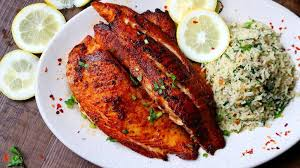

Clerkson
Home
About
Meal 1
Meal 2
☰
Grilled Fish and Rice

Ingredients
1 whole tilapia or snapper (cleaned and scaled)
2 tablespoons vegetable oil
1 tablespoon lemon juice
2 cloves garlic (minced)
1 teaspoon grated ginger
1 teaspoon paprika
1 teaspoon ground black pepper
1 teaspoon salt
1 teaspoon dried or fresh thyme
1 teaspoon chili flakes or fresh chopped chili
1 tablespoon soy sauce (optional)
Fresh herbs for garnish (e.g., parsley or coriander)
1 lemon (sliced, for garnish or serving)
2 cups cooked white rice (to serve with)
Grilled vegetables (optional side)
Step-by-Step Instructions
Clean and pat dry the fish.
Make diagonal cuts on both sides of the fish.
Mix oil, lemon juice, garlic, ginger, and spices in a bowl.
Rub the marinade all over the fish and into the cuts.
Let the fish marinate for at least 30 minutes.
Preheat grill or oven to medium-high heat.
Place the fish on the grill or in the oven (on a lined tray).
Grill each side for 7–10 minutes or until fully cooked.
Optionally grill vegetables alongside the fish.
Garnish with fresh herbs and lemon slices.
Serve hot with 200g cooked white rice.
Nutritional Information
Calories: ~670 kcal
Protein: ~55g
Carbohydrates: ~55g
Fat: ~22g
Serving Size: 300g grilled fish + 200g cooked rice